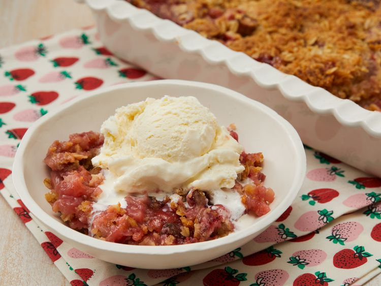

Here is the recipe for a delicious Strawberry Rhubarb Crisp
Gather all ingredients.
Preheat the oven to 375 degrees F (190 degrees C).
To make the fruit layer: Mix strawberries, rhubarb, white sugar, and flour together in a large bowl. Place the mixture in a 9x13-inch baking dish.
To make the crisp topping: Combine 1 ½ cups flour, brown sugar, oats, and butter and mix until crumbly. You may want to use a pastry cutter for this. Sprinkle on top of the rhubarb and strawberry layer.
Bake in the preheated oven until crisp and lightly browned, about 45 minutes.
Enjoy!